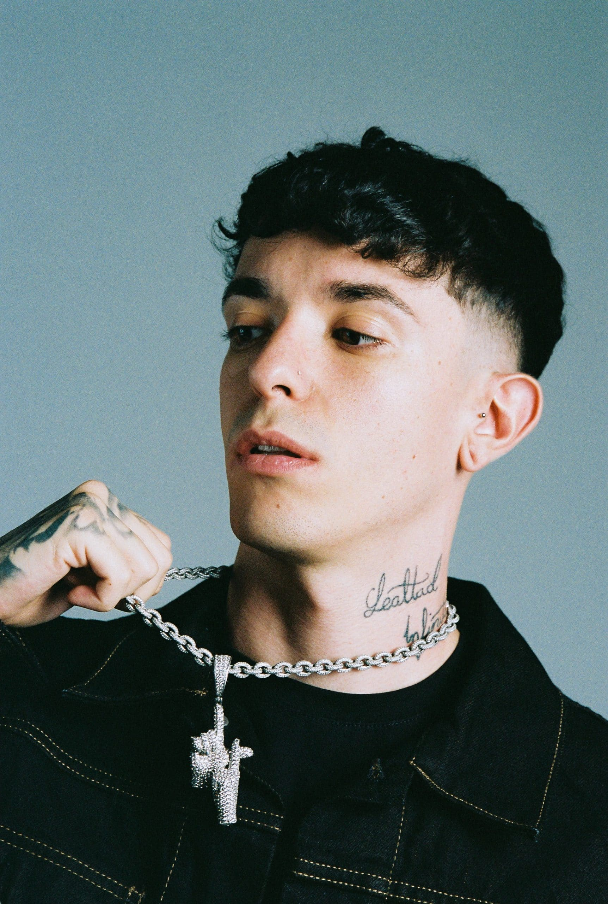

Nuestros artistas invitados
Este año contamos con varios artistas reconocidos en todas las islas de nuesro archipiélago:
Quevedo

Los Gofiones

La Pantera

Este es el festival anual de música canaria en vivo, con actividades y actuaciones. Desde artistas clásicos hasta los urbanos, es el espacio para que todos los públicos disfruten de la música.
En-clave LPA tiene como propósito promover la música y los ritmos tradicionales de las islas para su difusión entre los más jóvenes y que se mantenga el conocimiento del folclore mediante la música.
Este año 2026 tendrá lugar los días 27, 28 y 29 de noviembre en el estadio Gran Canaria Arena.
Este año contamos con varios artistas reconocidos en todas las islas de nuesro archipiélago:

| Horario | Viernes 27 | Sábado 28 | Domingo 29 |
|---|---|---|---|
| 12:00 - 14:00 | Demostración bailes tradicionales | Taller baile urbano | Taller bailes tradicionales |
| 14:00 - 16:00 | Descanso y food trucks | ||
| 16:00 - 17:00 | Taller instrumentos tradicionales | Demostración baile urbano | Concierto La Pantera |
| 17:00 - 18:00 | Concierto Los Gofiones | Taller instrumentos tradicionales | |
| 18:00 - 19:00 | Concierto Quevedo | Taller instrumentos tradicionales | |
| 19:00 - 20:00 | Taller baile urbano | Demostración bailes tradicionales | |